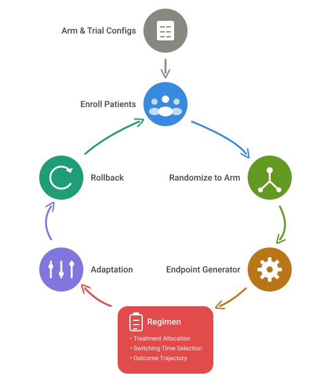

Simulate Trials with Dynamic Treatment Switching
Source:vignettes/dynamicTreatmentSwitching.Rmd
dynamicTreatmentSwitching.RmdThe TrialSimulator package can handle three types of
crossover designs, of which dynamic treatment switching is common in
clinical trial, but simulating it is usually an unmet need due to its
complexity. This vignette demonstrates how to simulate a trial where all
or a subset of patients are offered the option of treatment switching
over time. This happens in settings such as:
- crossover after progression, for example control patients switching to active treatment;
- rescue medication after non-response;
- dose escalation or dose reduction based on response or toxicity;
- switching after a adverse event to a different regimen.
These examples differ clinically, but they share the same simulation
challenge: the patient does not follow a single static treatment path
from baseline to the end of follow-up. In many cases, switching is not
just a change in treatment label. It changes the patient’s future
outcome trajectory. For example, switching may alter post-switch
survival, response probability, or adverse-event risk, while leaving
earlier outcomes unchanged. To address this challenge in simulation,
TrialSimulator offers to define a regimen
object in which we can implement custom mechanism for crossover.
Note that there are many other types of crossover that cannot be simulated using the approach discussed in this vignette. For example, patients may be reassigned after the arm is dropped. In such a scenario, the availability of alternative regimen depend on analysis result of unblinded data and can only happen at interim. We will show how to do that in other vignette. For crossover design with wash-out periods, please refer to this vignette.
A Common Structure
Most switching designs can be reduced to three questions:
- Who switches and what’s the new regimen?
- When does switching occur?
- What changes after switching?
This leads naturally to a two-stage simulation strategy:
- generate patient data under the originally assigned arm for all enrolled patients;
- apply a patient-level switching mechanism that updates post-switch outcomes.
This is the core idea behind regimen in
TrialSimulator.
Why regimen uses three functions?
The regimen interface splits treatment switching into
three components:
-
what(), a treatment allocator for switchers -
when(), a time selector for switching -
how(), a data modifier altering post-switch outcome trajectory
A single large switching function could do all of this, but it would mix different responsibilities and become difficult to reuse. In practice, these components often vary separately across scenarios. For example, one may keep the same switching population but compare different switching times, or keep selection and timing fixed while testing different post-switch assumptions. The three-function design keeps these choices explicit.
All the three functions take a data frame patient_data
as input argument. It is the data generated automatically by calling
generator of endpoints for the whole life-cycle of the
trial. The package will figure out patients who are eligible for the
three functions, and the right timing to call.
The Role of what()
This custom function is responsible for identifying switchers and assigning their new treatment regimen. Some typical rules that we can consider include:
- only patients in a control arm can switch;
- only non-responders receive rescue therapy;
- switching destination depends on subgroup, biomarker, etc.
The output of what() consists of two columns
patient_id and new_treatment. Only switchers
are returned. Any patients with NA as their
new_treatment are omitted. Patients not selected for
switching simply remain under their original treatment path and outcome
trajectory.
The Role of when()
This custom function assigns a switching time to each selected patient. A patient may switch:
- at progression,
- if not respond,
- at a scheduled visit,
- once a composite condition is met, etc.
Switching time can depend on the full outcome trajectory. For
example, patient may have a higher chance of switching (e.g., for
rescue) when being closer to the onset of major event (e.g., death).
Keeping timing in when() makes scenario analysis much
easier. The same switching population can be reused under different
timing assumptions.
Note that patients whose data is passed to when() is a
subset of patients whose data is passed to what(). The
package governs this to prevent logic error and avoid unnecessary
computation.
This function returns a data frame of two columns
patient_id and switch_time measured from
enrollment. All selected patients must be assigned a switching time,
otherwise package will throw an error.
The Role of how()
This custom function modifies patient data to reflect the consequences of switching. In practice, switching does not necessarily mean replacing the patient with a whole new patient from another arm. More often, we wants to
- keep pre-switch history unchanged;
- modify only what happens after the switch;
- update only selected endpoints;
- allow different post-switch behavior for different new treatments, etc.
So how() is not just a label change. It is a controlled
post-switch data update. Depending on the simulation goal,
how() could:
- extend residual survival time after switching;
- change the post-switch hazard rate;
- replace a future event time with a draw from another model;
- modify response probability after switching;
- leave some endpoints unchanged if they are not used in formal testing or decision making, etc.
This function returns a data frame of patient_id and
columns of endpoints that are altered. We do not have to return an
endpoint if it is not updated for any patient. For an endpoint that is
updated for a subset of switchers, simply set the unchanged cells to
NA and the package will ignore them. We can also fill those
cells with their original values when being passed to
how(). Note that we should never apply dropout or censoring
manually in how() because TrialSimulator will
handle that automatically when triggering milestones and prepare locked
data in action functions.
The three-functions design in regimen provides a useful
balance between structure and flexibility. The interface mirrors the way
investigators naturally describe switching designs. It encourages
modular thinking because each part can be changed independently.
Sensitivity analysis becomes straightforward under this framework as we
can modify one function at a time. Another benefit is that more than one
set of treatment allocator, time selector and data modifier are accepted
for simulating multi-stage crossover. It also avoids overloading the arm
definitions and supports partial data updates.
This flowchart illustrates how regimen is integrated
with other modules in TrialSimulator.

Implement Dynamic Treatment Switching
Dynamic treatment switching can be added to any simulation codes
implemented with TrialSimulator. So we only show code
snippets in this vignette to illustrate what do the three functions look
like in several examples.
In all cases, we need to implement functions to initialize an
regimen object
treatment_allocator <- function(patient_data){...}
time_selector <- function(patient_data){...}
data_modifier <- function(patient_data){...}
regimen <- regimen(treatment_allocator, time_selector, data_modifier)All three functions must have patient_data as argument
otherwise TrialSimulator will throw exception. The regime
is then registered to a trial before any arm is added to it.
trial <- trial(...)
trial$add_regime(regimen)Any codes like below will trigger an error message because
trial$add_arms(...) enrolls patients into a trial
immediately but we need to make regimen ready before
then.
trial <- trial(...)
trial$add_arms(sample_ratio, soc, low_dose, high_dose)
trial$add_regime(regimen)#> Error in trial$add_regimen(regimen) :
#> Member function trial$add_regimen() must be called before trial$add_arms(). A good practice is to call trial$add_regimen() immediately after trial() is executed.Example 1: Crossover after progression
In oncology trials, patients initially randomized to standard of care
(soc) may be allowed to switch to active treatment after
disease progression, conditional on a patient-level event. If we assume
30% of the patients are assigned to low dose while 40% of the patients
are assigned to high dose, we can implement the what()
function like
treatment_allocator <- function(patient_data){
## add break point to develop and debug
# browser()
switch_to <- sample(c('low', 'high', 'stay'), nrow(patient_data),
replace = TRUE, prob = c(.3, .4, .3))
data.frame(
patient_id = patient_data$patient_id,
new_treatment =
dplyr::case_when(
# patient die before progression cannot switch
patient_data$os == patient_data$pfs ~ NA_character_,
patient_data$arm == 'placebo' & switch_to == 'low' ~ 'low dose',
patient_data$arm == 'placebo' & switch_to == 'high' ~ 'high dose',
TRUE ~ NA_character_
)
)
}The when() function simply returned the progression
time, i.e., switching does not relies on event after the switching
time.
time_selector <- function(patient_data){
## add break point to develop and debug
# browser()
data.frame(
patient_id = patient_data$patient_id,
## all patient in patient_data progress before die
## thus pfs < os and can switch.
## See treatment_allocator()
switch_time = patient_data$pfs
)
}Another common way to specify the switching time is picking a time
point between pfs and os, i.e.,
time_selector <- function(patient_data){
## add break point to develop and debug
# browser()
data.frame(
patient_id = patient_data$patient_id,
## all patient in patient_data progress before die
## thus pfs < os and can switch.
## See treatment_allocator()
switch_time = runif(nrow(patient_data), min = patient_data$pfs, max = patient_data$os)
)
}In the how() function, we extend residual survival time
by a factor using the causal accelerated failure time model depending on
the assigned dose. Here we only update the overall survival
os and leave other endpoints (e.g., response status) or
variables unchanged, assuming that we won’t use their values after
switching when summarizing the simulation.
data_modifier <- function(patient_data){
## add break point to develop and debug
# browser()
f <- ifelse(patient_data$new_treatment == 'low dose', 1.1, 1.15)
data.frame(
patient_id = patient_data$patient_id,
## other_endpoint = ...,
os = patient_data$switch_time + f * (patient_data$os - patient_data$switch_time)
)
}Example 2: Crossover for non-responsers
Here we consider a trial of a placebo arm and two active treatment arms (low and high dose). Patients in the low dose arm who do not respond are switched to a higher dose.
treatment_allocator <- function(patient_data){
## add break point to develop and debug
# browser()
data.frame(
patient_id = patient_data$patient_id,
new_treatment =
dplyr::case_when(
patient_data$arm == 'low dose' & patient_data$response == 0 ~ 'high dose',
TRUE ~ NA_character_
)
)
}When implementing time selector for the function when(),
the switching time is set to the readout time
time_selector <- function(patient_data){
## add break point to develop and debug
# browser()
data.frame(
patient_id = patient_data$patient_id,
## all patient in patient_data progress before die
## thus pfs < os and can switch
switch_time = patient_data$response_readout
)
}Example 3: Crossover when condition deteriorates
Now we assume that all patients in the placebo arm can crossover when
their condition deteriorate significantly. Specifically, the switching
time is 1 month before a patient dies. If the overall survival is
shorter than a month, the switching time is set to
0.9 * os.
treatment_allocator <- function(patient_data){
## add break point to develop and debug
# browser()
data.frame(
patient_id = patient_data$patient_id,
new_treatment =
dplyr::case_when(
patient_data$arm == 'placebo' ~ 'new treatment',
TRUE ~ NA_character_
)
)
}
time_selector <- function(patient_data){
## add break point to develop and debug
# browser()
data.frame(
patient_id = patient_data$patient_id,
## all patient in patient_data progress before die
## thus pfs < os and can switch
switch_time = ifelse(patient_data$os <= 1, .9 * patient_data$os, patient_data$os - 1)
)
}Example 4: Crossover multiple times
We can implement multiple rounds of crossover for each patient. To do
this, simply provide regimen() with a list of treatment
allocators for what, a list of time selectors for
when, and a list of data modifiers for
how.